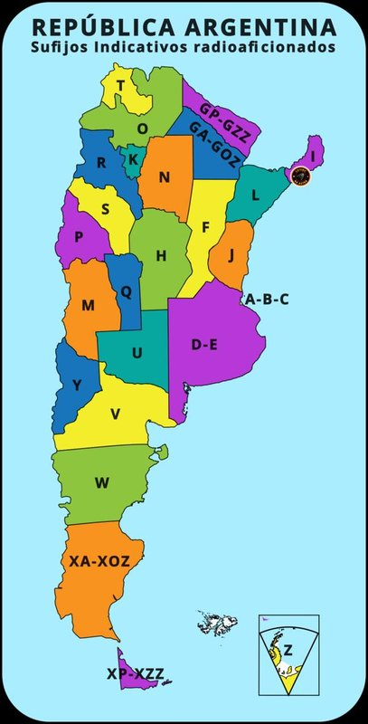

C.U. 003

23 provincias+ CABA
ADIF · Provincias · Bandas
Argentina en Frecuencia
Cargá tu libro de guardia y comprobá qué provincias argentinas trabajaste en cada banda y modo. El archivo se procesa localmente en el navegador.
Abrir herramienta →Trabajá todas las provincias ★